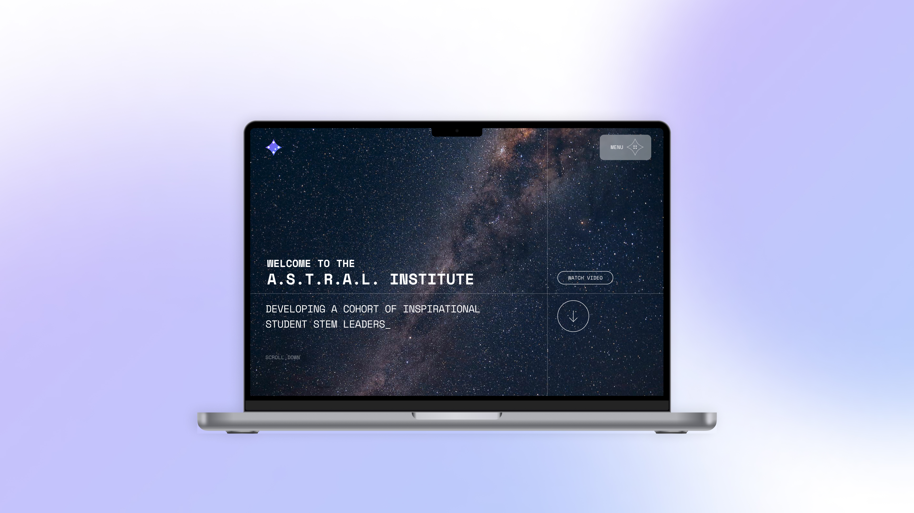

Prof. Matthew Bailes

Dr. Chris Flynn




The essential aim for this project is to create a brand for ASTRAL, which reflects its vision and modernity. The branding also needed to reflect S.T.E.M (science, technology, engineering and mathematics), either through text or through the logo itself, while also highlighting through symbolism that this is an Australian-based organisation, primarily (but not exclusively) targeted for Australian students.
Moreover, it needed an element of astronomy, as the program does focus on astronomy, and the full name of ASTRAL (Astronomy, Supercomputing, Technology, Research, Analytics, Leadership) also has an element of astronomy. The definition for ASTRAL is also indicative of something related to the stars, and hence needs to be shown in some part of the branding. Effective branding can be achieved with a high quality logo and a well-thought-out website.
Thank you to Hendrik Combrinck for his support in testing the website during the initial stages of deployment on the test environment. Thank you to Ruoyao, Evie, Rebecca and Hendrik for providing their reviews of the ASTRAL program to the website. Thank you to Dr. Chris Flynn and Prof. Matthew Bailes for supervising this project. This project is funded by ASTRAL.